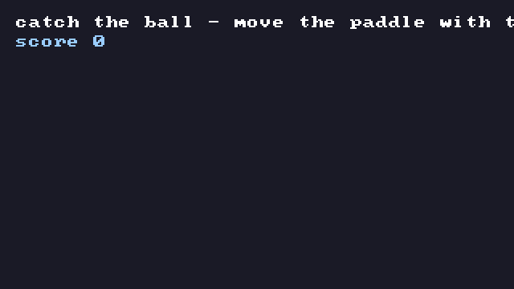
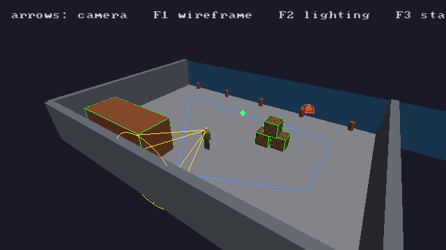

About BuzEngine
What BuzEngine is for
BuzEngine is a template to build 2D and 3D games in C++, written at Breda University of Applied Sciences (BUas). The engine is deliberately small: it takes care of the window, the graphics card, input, sound and loading files, and not much more. Its complete source code is included in every template, so you can look up how any part of it works.
What you build yourself
The engine deliberately leaves out a few systems that most games need, so that you can write them yourself: in 2D, a camera that scrolls through the level, sprite animation and collision; in 3D, an animation player and a cache for models. The guided experiences take you through each of them step by step.
Your starting game
Every template comes with a game that already runs. Both templates have sample_2d, a "catch the ball" game; the 3D template also has sample_3d, a simple 3D scene.


Finding your way around these docs
The guides explain how to do things, such as setting up the project, drawing, reading input and playing sound. The API reference describes every class and function in the engine. Use it when you already know what you need and want the details, such as which parameters a function takes.
Press / on any page to search the guides and the reference together.